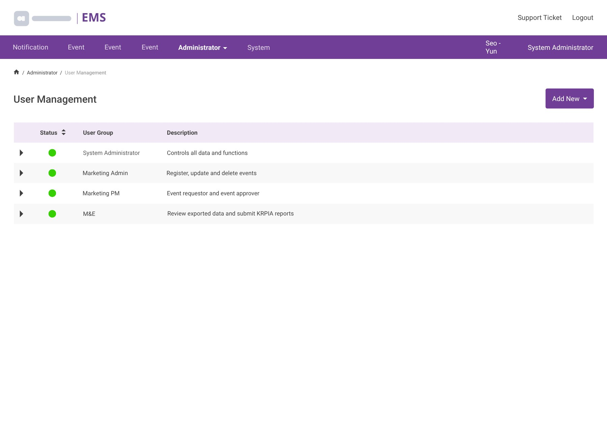
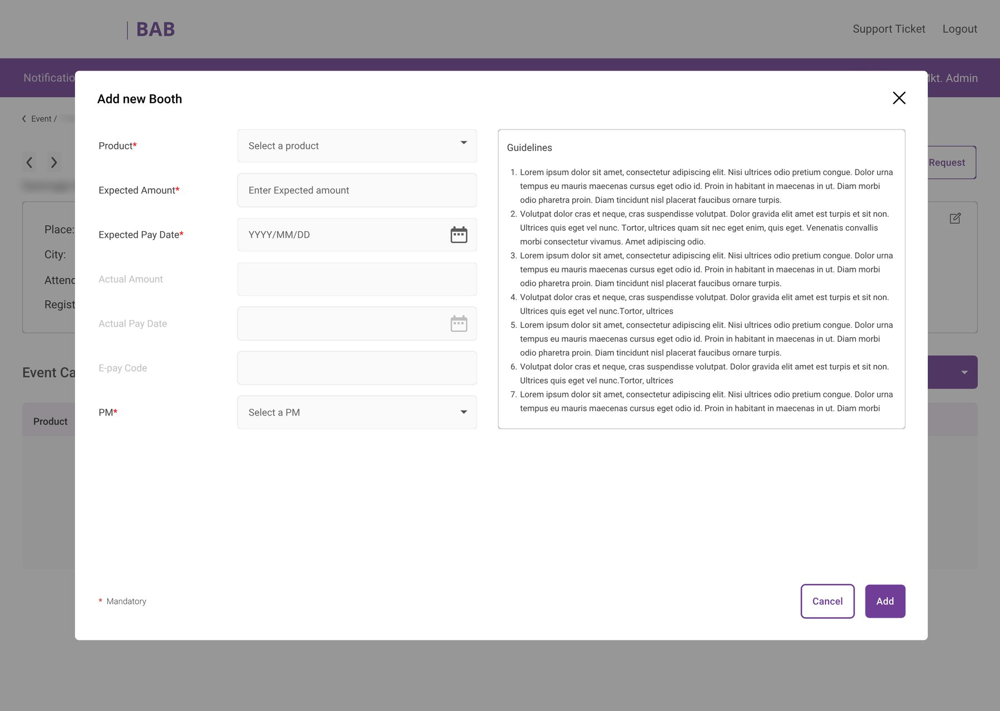
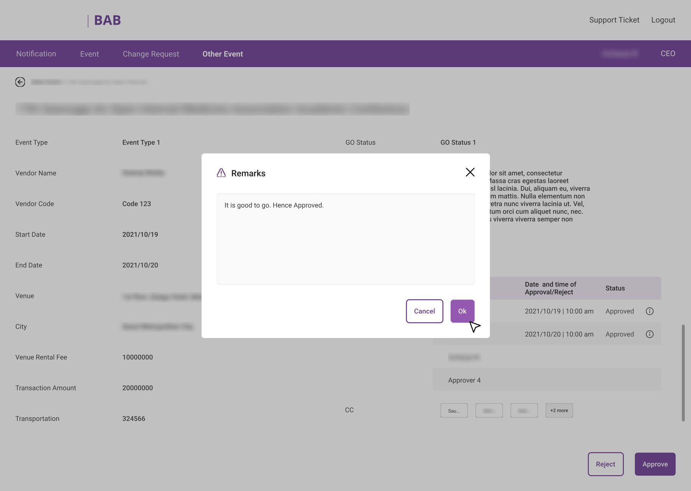
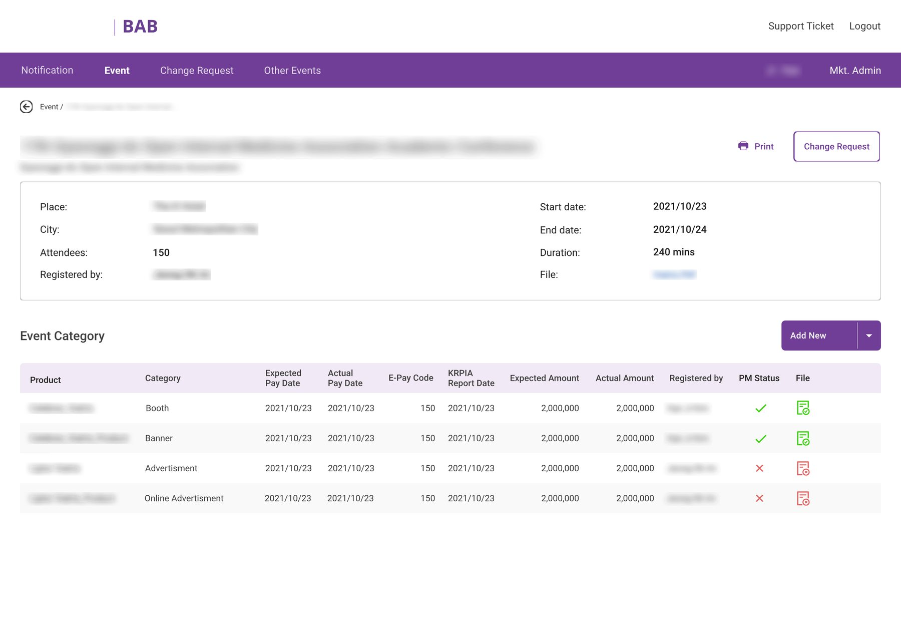
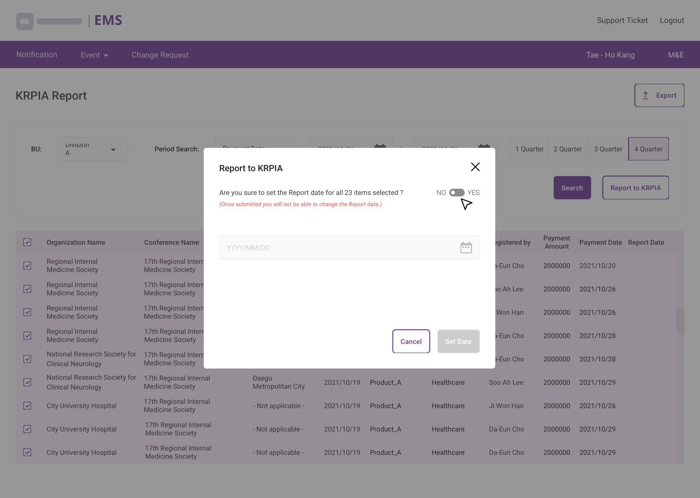

NEW TOOLS FOR A REGULATED BUSINESS.
Viatris Korea needed two internal apps at the same time.
The first was for sponsoring medical conferences. A marketing team registers an event and the booths, banners and online ads at it, each one goes through approval, and the sponsorships are then reported to KRPIA, the industry association pharma companies in Korea report to.
The second was an employee benefits portal to replace the current system: applying for benefits, HR approvals, the company club, payroll reports and analytics, for employees, HR admins and system admins.
The same team was also building an RFP and PR tool for Viatris Vietnam. I led design across all three, with UX consultants working under me.
In pharma, even an internal tool carries rules. A sponsorship has limits on attendees, booths and amounts, and some exceptions need the legal team. A benefit has validation rules and ends up in payroll. And the benefits portal had to go through the client's validation documents before it could move to testing.
The Problem
Design the apps from requirements that weren't written yet, for people who work in Korean.
Screen: Sponsorship app home, events calendar and notifications

Events on a calendar
The month at a glance: which conferences are coming and how long each one runs.
Notifications beside it
Each notification with its date, next to the calendar.
Four places to go
Notification, Event, Change Request and Other Events, in one header.
WORKSHOPS FIRST. SCREENS SECOND.
For the benefits portal, there was no requirements document to start from. So the work started with the client, in workshops through November 2021, one area at a time: system administration, benefits setup, the message center, the FAQ, claims, the company club, and sessions with HR on approvals, payroll tasks and reports.
The workshops decided what to leave out as much as what to build. File management, language management, email notifications, a benefit tip sheet and a separate "my benefit" page were dropped there. Delegation was dropped too, because the current system didn't have it and HR needed to confirm it first.
Each area then went through the same steps: a requirements document, wireframes in sprints, a clickable prototype and the client's sign-off. The requirements went through four rounds of feedback between 23 November and 9 December 2021 before they were approved.
FIVE DECISIONS THAT SHAPED THE APPS.
Decision 01
Design the Administration Once
The sponsorship app's administration came first: users and user groups, codes, menus, error messages, notifications and the event guide.
The benefits portal needed the same kind of administration. So its guide management was built on the sponsorship app's requirements, and its user and menu management follow the same screens. The Vietnam tool started its first sprint with user and menu management too.
Administrators see one pattern across the apps, and the team didn't have to design it again for each one.
Screen: User management, sponsorship app

Groups, not people first
Access is set by user group, and each group says in one line what it can do.
Status at a glance
Every group shows whether it is active before anyone opens it.
The same pattern again
The benefits portal's user and menu management follow these screens.
Decision 02
Put the Rules Where They Apply
The sponsorship rules sit in the form, at the field they apply to. An event needs a minimum number of attendees. A conference allows only so many booths, banners and online ads. Each has an amount limit that depends on the kind of organization. And a second booth for the same product needs the legal team's approval.
When a request breaks a rule, the requester sees which rule and why, before the request ever reaches an approver.
Screen: Add a booth, with the guidelines beside the form

Guidelines next to the fields
The requester reads the rules while filling the form, not in a separate document.
Mandatory fields marked
What has to be filled is clear before Add is pressed.
One booth at a time
Each booth is its own entry on the event, so each one can be approved on its own.
Decision 03
No Decision Without a Reason
Approving, rejecting or deleting asks for a reason. Every approver shows on the request with their status, the date and time of their decision, and their remarks.
So when an event is rejected, the requester sees who rejected it and why, and can fix it from the same screen.
Changes after approval go through a change request. It shows the existing data next to the new data, with every changed field highlighted, and a summary of the whole change before it's submitted.
Screen: An approver adds remarks before approving

A reason with every decision
The remarks dialog comes before the approval is recorded.
Every approver on record
Each step shows its status and the date and time of the decision.
Approve or reject in one place
Both actions sit at the end of the same screen as the event details.
Screen: Event detail with each sponsorship item and its PM status

Every item on one event
Booths, banners and ads are listed under the event they belong to.
Status per item
Approved and not approved are visible on each line, not only on the event.
Change request from here
A change after approval starts from the event, not from a separate form.
Decision 04
Make the Last Step Hard to Get Wrong
On the KRPIA report, the team filters by quarter, checks the list, sets the payment and report dates, and exports.
Setting the report date can't be undone. So the confirmation says that, and says how many items it applies to. Items with a missing date are flagged before anyone gets that far.
Access works the same way. Someone who isn't registered gets a screen that says so, with a way to register.
Screen: KRPIA report, setting the report date

Says how many
The confirmation names the number of items the date will apply to.
Says it can't be undone
The note under the question is in the dialog, not in a help page.
Quarter by quarter
The report filters by quarter before anything is set or exported.
Decision 05
One Flow per Benefit
The benefits portal has five benefit types, and each one asks for different things: congratulations and condolences, school fees, the company club, medical expenses and the condominium lottery. So each got its own form, and HR gets each one in its task list to approve or reject, including reversing a payment and recovering an amount.
The condominium lottery started as a process in the backend. During the build, it was decided that it needed its own screens. We designed them, and the client approved them.
WHEN THE DESIGN TEAM FELL SICK.
At the end of January 2022, people on the design team fell sick with COVID. For a week there were no new screens, and development on the benefits portal paused while it waited for them.
We replanned the design work by module and picked it up from there. The five benefit forms were designed between 4 and 10 February and signed off on 17 February. HR's task screens were designed by 16 February and signed off on 21 February, four days ahead of the plan. The last design sprint, for the company club, analytics and reports, was signed off on 2 March.
All through this, the same team was working on the Vietnam tool.
WHAT WAS DESIGNED AND SIGNED OFF.
3
Apps for Viatris from the same team: sponsorship and benefits in Korea, RFP and PR in Vietnam.
7
Areas in the benefits portal: claims, HR tasks, system admin, HR admin, the company club, my profile and the information center.
5
Benefit types, each with its own form and HR approval.
4
Rounds of feedback on the requirements before sign-off.
This page reports scope and sign-offs, not measured results. I also designed for Viatris a pharmacy ordering site, a contract lifecycle tool and a tracker for marketing content requests.